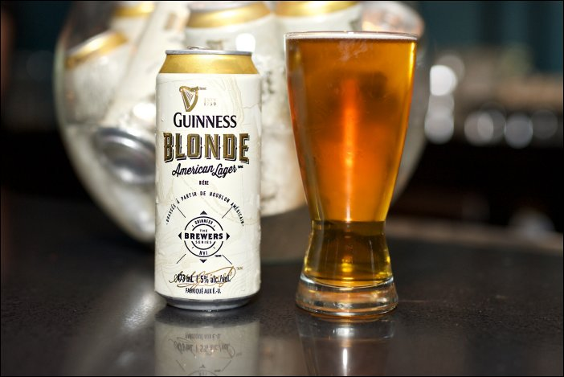

HOME
OUR PICKS
Guinness Blonde
Guinness Brewery
Brewed with North American ingredients, including Pacific Northwest hops, as well as their classic Guinness yeast, Guinness Blonde is a crisp, golden beer. It has a noticeable but gentle hop aroma of citrus and tropical fruits, clean cracker-bread malt flavor and a pleasantly bitter refreshing finish.
With a location in Halethorpe, MD, St. James's Gate Brewery is a brewery founded in 1759 in Dublin, Ireland, by Arthur Guinness. The company is now a part of Diageo, a British company formed from the merger of Guinness and Grand Metropolitan in 1997. The main product of the brewery is Guinness Draught.
Check out their site HERE 